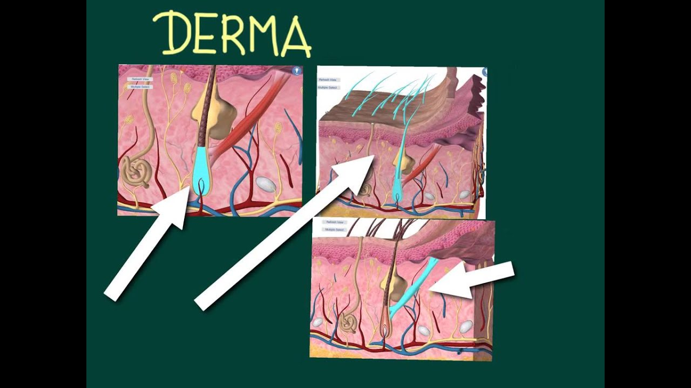

Come applicare l'acido ialuronico sul viso
CPHealthGroup
Principale arti e mestieri bellezza e cura personale artigianato e tempo libero malattie ed effetti collaterali Fai-da-te e rimodellandoCome applicare l acido ialuronico sul viso
bellezza e cura personale 2019
L acido ialuronico è una sostanza che naturalmente genera il nostro corpo e nelle sue proprietà è la capacità di ringiovanire la pelle, idratarla e prevenire il rilassamento, il riempimento e il miglioramento dell aspetto delle rughe che si formano principalmente negli occhi, sulla fronte e intorno alle labbra. Questo componente può essere applicato sulla pelle in diversi modi, tutto dipende dalle reali esigenze della tua pelle. È molto comune usare l acido ialuronico per il viso , sebbene venga anche usato esternamente in altre parti del corpo.
Se sei interessato a saperne di più su questo prodotto, continua a leggere perché nelle righe seguenti ti mostreremo come applicare l acido ialuronico sul tuo viso e dare consigli.
Potresti anche essere interessato a: Benefici dell acido ialuronico per la pelleQual è l uso dell acido ialuronico - i suoi benefici
Come abbiamo appena chiarito, questo acido viene prodotto naturalmente, ma nel tempo la quantità viene ridotta e il nostro corpo lo nota. Quando c è una carenza di questa sostanza nell organismo, si favorisce la disidratazione e, quindi, compaiono rughe e flaccidità . Quindi, a cosa serve l acido ialuronico? Bene, uno dei grandi vantaggi dell applicazione di questa sostanza nel derma è che aiuta le cellule a trattenere l acqua, che consente una profonda idratazione della pelle , aiutando a riempire i solchi e le rughe che si producono e dando un aspetto più liscia.
Ecco perché, appunto, sempre più persone scelgono di applicarlo per ottenere un extra e compensare ciò che il corpo sta perdendo.
Può essere applicato in diverse parti, ma principalmente lo usiamo per il viso. In particolare, l applicazione dell acido ialuronico , a casa o in un centro di medicina estetica, ci concentriamo sul contorno delle labbra, il naso, il contorno degli occhi e le occhiaie.
In questo altro articolo vi mostriamo quali sono i diversi benefici dell acido ialuronico per la pelle.
Come applicare l acido ialuronico sul viso
Prima di spiegare come applicare l acido ialuronico sul viso , è necessario sottolineare che questo trattamento deve essere somministrato da uno specialista , sia esso un dermatologo o un chirurgo plastico e in centri autorizzati per questo.
Il modo più comune per applicare l acido ialuronico è tramite iniezioni e non solo è posto con uno scopo estetico nella pelle, ma è anche usato in questo formato per riabilitare alcune articolazioni.
Per beneficiare esteticamente di questa sostanza, nel derma verranno praticate iniezioni o infiltrazioni di acido ialuronico e la sua composizione può variare a seconda dell area in cui è collocata. Se il trattamento viene eseguito nel modo giusto, gli effetti sono immediati e naturali, tuttavia non sono permanenti e, come accade con la sostanza naturale prodotta dal nostro corpo, l acido ialuronico diminuirà di nuovo con il passare del tempo. L effetto sulla pelle può variare da 9 a 12 mesi o fino a due anni.
Quindi, al giorno d oggi c è più di un modo per applicare l acido ialuronico sul viso, potendo scegliere di farlo in un centro di medicina estetica oa casa, secondo il metodo che scegliamo. Quindi, se ti chiedi come viene applicato l acido ialuronico perché stai pensando di iniziare a usarlo, fai attenzione ai metodi più comuni:
Fiale di acido ialuronico iniettabile: questo è il formato liquido di questo prodotto che è stato sintetizzato in modo tale da poter essere iniettato sotto la pelle da un professionista. Questo trattamento è consigliato per pelli molto mature, poiché ripristinerà la fermezza e riempirà le rughe. Blister di acido ialuronico puro non iniettabili: questo è il formato del prodotto per uso topico o esterno. Per usarlo correttamente, le ampolle di acido ialuronico liquido vengono aperte con cura e applicate sulla pelle del viso con un leggero massaggio circolare in modo che assorba il prodotto mentre stimola la circolazione del sangue nella zona. Creme e sieri con acido ialuronico: un altro modo per applicare l acido ialuronico sul viso è attraverso le creme arricchite con questa sostanza. Sebbene sia un opzione più economica, il suo effetto è più lento ed è generalmente raccomandato per la pelle giovane e meno danneggiato dal passare del tempo. Per usarlo basta applicarli come qualsiasi altra crema antirughe e / o idratante: con un piccolo tocco e un massaggio circolare.Creme e sieri antirughe all acido ialuronico
Se preferisci evitare l iniezione di questo prodotto e ti piace l idea di applicare una crema o un siero sul viso, soprattutto se la tua pelle non è ancora molto matura, potresti voler sapere che nel mercato puoi trovare una varietà di questi prodotti. Inoltre, queste creme stimolano la produzione di collagene, che migliora l effetto di idratazione e compattezza sul viso.
Attualmente ci sono creme con acido ialuronico e fattori di crescita , che sono proteine piastriniche che sono vitali per il corretto funzionamento delle cellule, influenzando principalmente la loro crescita e la loro differenziazione o specializzazione nel corpo. Pertanto, i fattori di crescita sono potenti rigeneratori tissutali e ideali per migliorare l aspetto e la salute della pelle del viso agendo insieme all acido ialuronico.
Se vuoi usare creme e sieri antirughe con acido ialuronico per migliorare la tua carnagione, allora è meglio consultare il tuo dermatologo, o il centro di parafarmacia professionale o di medicina estetica, su quale tipo di crema o siero si adatta alla tua pelle. Si può consigliare una crema con acido ialuronico, collagene e vitamina C , che è in realtà una delle migliori creme di collagene per il viso perché è così completa, o un siero con acido ialuronico e vitamina C , tra le altre combinazioni adatte una formula che si prende cura della pelle ed è antirughe. Ad ogni modo, oltre a queste combinazioni benefiche, puoi usare anche creme con acido ialuronico puro .
Effetti collaterali dell acido ialuronico e controindicazioni
La sicurezza di queste applicazioni è stata dimostrata clinicamente; tuttavia, ci possono essere casi in cui l applicazione di acido ialuronico causa effetti avversi, specialmente se non viene usato correttamente. Alcuni sintomi degli effetti collaterali dell acido ialuronico possono comparire tra 24 e 48 ore dopo l applicazione e durare fino a 1 settimana, tra questi:
Rossore o irritazione della pelle. Lieve dolore nella zona. Sensibilità. Lividi e / o durezza nell area in cui è stata applicata.Applicare l acido ialuronico, in particolare l iniettabile, è controindicato durante la gravidanza e l allattamento, così come nelle persone che hanno gravi allergie o se c è un infezione. Ricordarsi di consultare il medico sul desiderio di eseguire questo trattamento, in quanto sarà la persona più appropriata a indicare i rischi che potresti avere, a seconda delle condizioni che presenti e della tua età.
Messaggi Popolari
Come rendere gli esfolianti per la pelle grassa
Come evitare l umidità negli armadi
Come fare un ferro sopracciglia fatto in casa
Trucchi per uccidere le formiche
Quali sono i sintomi della depressione postpartum
Cause della malattia baciante
Lascia Il Tuo Commento
Messaggi PopolariCome rimuovere le occhiaie con acido ialuronico
Come identificare il disturbo della personalità evitandolo
Home rimedi per l infezione renale
Esercizi per perdere peso a casa
Quanto spesso posso fare gli scricchiolii?
Come fare gli scricchiolii senza danneggiare la schiena: consigli ed esercizi di routine
Chi Siamo
Le Informazioni Più Importanti E Rilevanti Sulla Salute, Bellezza, Moda, I Bambini E La Casa.Categorie Popolari
arti e mestieri bellezza e cura personale artigianato e tempo libero malattie ed effetti collaterali Fai-da-te e rimodellando salute della famiglia moda e stile fitness cibo e bevandeMessaggi Popolari
Come far crescere i capelli afro velocemente Qual è il trattamento per l attacco d ansia Come costruire una zanzariera Proprietà curative di piantaggine Come rimuovere le strisce rosse© Copyright 2021. All rights reserved. Come applicare l acido ialuronico sul viso